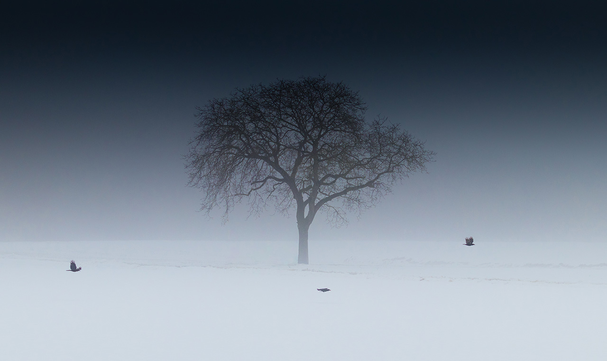
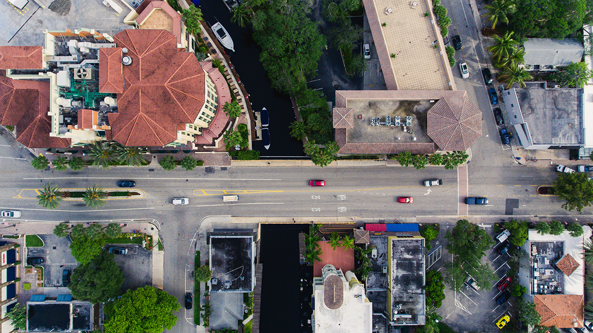

UN SITIO QUE TE DICE A DONDE DEBES IR
2019 / 01 / 01
LUGARES
Un bosque es un ecosistema donde la vegetación predominante la constituyen los árboles y matas.1 Estas comunidades de plantas cubren grandes áreas del globo terráqueo y funcionan como hábitats para los animales, moduladores de flujos hidrológicos y conservadores del suelo, constituyendo uno de los aspectos más importantes de la biosfera de la Tierra.
Aunque a menudo se han considerado como consumidores de dióxido de carbono atmosférico, los bosques maduros son prácticamente neutros en cuanto al carbono, y son solamente los alterados y los jóvenes los que actúan como dichos consumidores.
2019 / 01 / 03
TRANSPORTES
Quizás porque muchos soñamos con ver el mundo a vista de pájaro y para ello marcarse un vuelo en helicóptero es una oportunidad fantástica para hacerlo. A lo largo de estos años he tenido la suerte de poder vivir enormes experiencias en helicóptero por el mundo para contemplar de otra manera una ciudad, una maravilla natural y, en definitiva, fabulosos escenarios dignos de ser admirados utilizando ángulos diferentes.
Cuando viajamos y fotografiamos tanto lugares como momentos nos gusta buscar buenos ángulos para atraparlos tanto en la retina como en nuestra cámara de fotos. Y hay que reconocer que observar las cosas desde el aire supone un tremendo punto emocional.